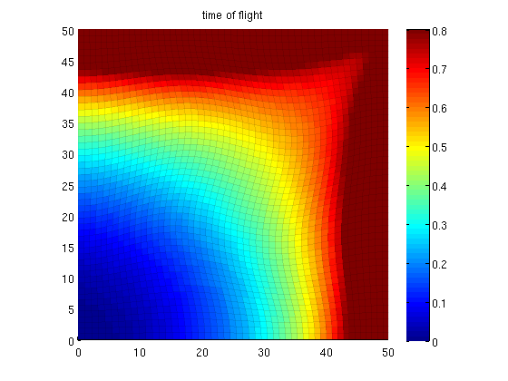

G = cartGrid([50,50]);
G = twister(G);
G = computeGeometry(G);
rock.perm = ones(G.cells.num, 1);
rock.poro = ones(G.cells.num, 1);
fluid = initSimpleFluid('mu' , [ 1, 10]*centi*poise , ...
'rho', [1014, 859]*kilogram/meter^3, ...
'n' , [ 2, 2]);
S = computeMimeticIP(G, rock);
src = addSource([], 1, sum(poreVolume(G,rock)), 'sat', 1);
src = addSource(src, G.cells.num, -sum(poreVolume(G, rock)), 'sat', 1);
xr = solveIncompFlow(initResSol(G, 0), G, S, fluid, 'src', src);
t0 = tic;
T = computeTimeOfFlight(xr, G, rock, 'src',src);
toc(t0)
clf,plotCellData(G, T, 'edgecolor','k','edgealpha',0.05);
title('time of flight');
caxis([0,0.8]);axis equal tight;colormap jet
colorbar
Elapsed time is 0.006663 seconds.
